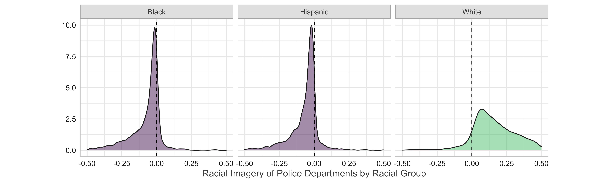
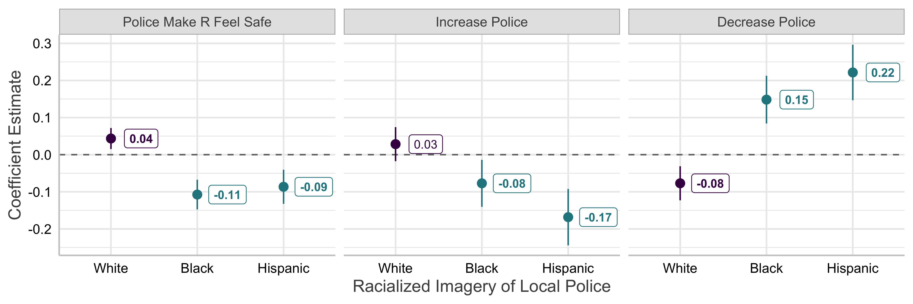
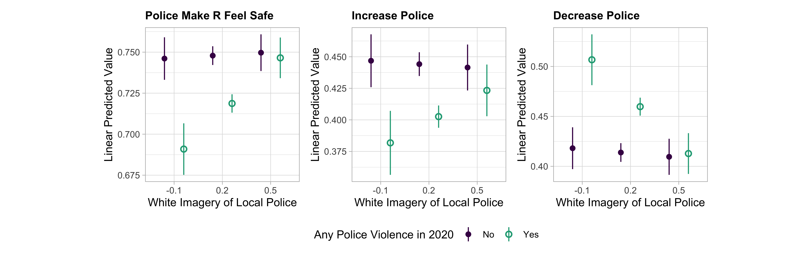
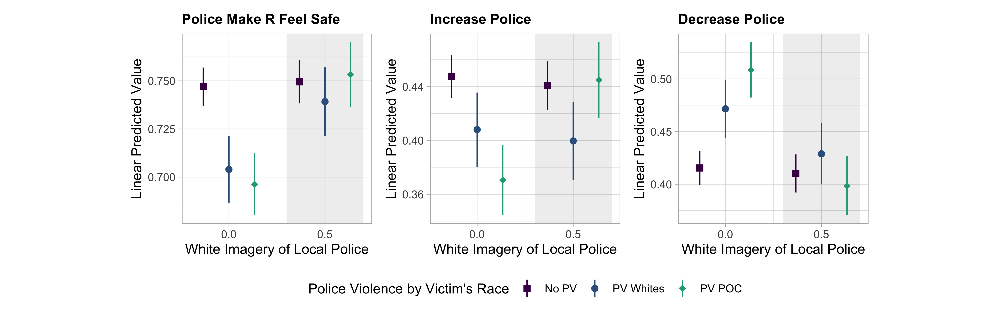

Shades of Blue: Racial Imagery of Police and White Attitudes toward Policing
Following the murder of George Floyd, whites and blacks again diverged in their perceptions of and reactions to the reality of police violence in the United States. Compared to people of color, white Americans are more supportive of police agencies and more hesitant about reforming policing behavior even in the wake of multiple recent unjustified police-involved fatla shootings. While existing works look into experiential and cultural differences between the two groups, this study examines the role of whites’ excessive representation in police workforce that fosters a “white imagery” of the profession. Can this racialized image of police officers activate in-group favoritism among whites but push blacks away? Merging the 2020 Cooperative Election Study with administrative sampling of local police departments, I find that given whites’ share of local population constant, a higher percentage of white officers in local police department is associated with more favorable feelings of police among whites, a greater black-white divide in police attitudes, and makes the white residents more tolerant of police at the presence of police violence.
1 Introduction
On May 25 of 2020, George Floyd, an unarmed 46-year-old African American man, was choked to death in Minneapolis, Minnesota while a white local police officer knelt on his neck for over nine minutes. This blatant instance of political brutality, along with multiple police-involved homicides under intense public scrutiny, brings about a national debate on how police and policing behavior should be reimagined. Similar to many other issues in American politics, a racial cleavage emerges in the public’s response to police violence. Compared to people of color, especially African Americans, whites are in general more approving of police performance, and more likely to regard fatal encounters with police as isolated incidents rather than indications of larger problems (Desilver, Lipka, and Fahmy 2020; Morin and Stepler 2016). In terms of proactive moves to address police brutality, whites are also less likely to support the Black Lives Matter movement or defunding the police to better finance other public programs (Thomas and Horowitz 2020). Behind this attitudinal gap on police is an extensive division between whites and blacks regarding their perception of the criminal justice system (Hurwitz and Peffley 2005; Peffley and Hurwitz 2010; Sigelman et al. 1997).
Why do people of distinct racial identities come to divergent responses of the same institution? Some studies have emphasized the role of lived experiences of blacks and whites, with the former far more intensely scrutinized and confronted by law enforcement during their life course (Alvarado 2020; Peffley and Hurwitz 2010). Prior information and expectations established from these experiences set apart the ways black and white citizens process events of police violence (Jefferson, Neuner, and Pasek 2021). Attention is also called to the possibility that cultural or social processes can drive blacks and whites to different conclusions even at the face of similar information. For example, racial differences in attribution between structure versus agency may matter: whereas blacks tend to see police violence as product of institutional ills, whites are more likely to blame the persons killed for their wrongdoings, leaving views on police intact (Israel-Trummel and Streeter 2022; Streeter 2019).
Jefferson, Neuner, and Pasek (2021) focus on how the incidents of police violence are themselves racialized in the public mind: indeed, all cases of fatal police encounters that received intense publicity in 2020, like that of Jacob Blake and George Floyd, involve a black victim and a white officer. With these racial images in mind, whites and blacks engage in “race-based motivated reasoning”, predisposed to blame black victims and white officers respectively as “an emotional or affective commitment” to defending their racial in-groups (Jefferson, Neuner, and Pasek 2021, 1166). In this sense, the racial gap in perceiving police exemplify the imbalance of racial dynamics within the practice of policing itself. Whites’ imagination of blacks as criminal and violent is well documented, and is shown to affect whites’ preferences on law enforcement (Hurwitz and Peffley 1997; Payne 2001; Peffley and Hurwitz 2007). Less examined, however, is the extent to which police officers are perceived by the public as a white profession.
Will a “whiter” police enjoy higher approval among the white population it serves? More importantly, are whites less willing to update their beliefs in the face of police violence when such brutality is perpetrated by a police body in which whites are excessively represented? Built upon the framework of group-based motivated reasoning proposed by Jefferson, Neuner, and Pasek (2021), this study approaches the racial division on policing through the lens of racial imagery of police. Specifically, I examine whether whites’ perceptions of police are shaped by how whites are represented in local police workforce. Using the 2016 Law Enforcement Management and Administrative Statistics (LEMAS), I measure the white imagery of a place’s police by looking at how whites’ share in police employment exceeds their percentage in local population, and link this measure to 2020 Cooperative Congressional Election data where a wide range of policing attitudes are documented for a large sample.
The results show that in places where whites are overly represented in police workforce than in overall population, whites present more favorable views on police performance and have a larger gap with blacks regarding perceptions of police. They are also more tolerant of police in the wake of fatal police encounters, and this effect is most salient when local police violence is racialized in terms of the racial groups it victimizes. In a word, racial imagination of police and police brutality is of great influence in shaping the current racial divide on policing.
2 Race, Representation, and Police
Beyond its substantive influence on policy outcomes, descriptive representation regarding race is also of great symbolic, intangible value (Hayes and Hibbing 2017). In theory, a descriptive linkage between public officials and their constituents should foster feelings of trust and inclusion, and thereby enhance the perceived legitimacy of related institutions (Mansbridge 1999; Phillips 2003). Either by taking demographic traits as ideological shortcuts (Sen 2017) , or influenced by other cultural forces set in motion (Dawson 1995), descriptively represented constituents are more likely to contact the elected officials (Gay 2002), and express more favorable perceptions of their performance (Gay 2002; Jones 2016). Though most studies on this topic are conducted within the context of elected or judiciary offices (Kaslovsky, Rogowski, and Stone 2021), the symbolic power of descriptive representation should be expected in more grassroots agencies like police. Just like the way voters can perceive the social imagery of more high-profile figures through visual medium (Mutz 2015) , street-level bureaucracy, with their discretion of and proximity to people’s everyday life (Lipsky 1980), can bring demographic similarity between the servants and the served to the front stage of the public mind.
Outside specific discussions on political representation, a more extensive literature of racial and ethnic politics also suggests that white attitudes on policing can be shaped by the racial appearances of police. In American politics, some policy domains are strongly associated with distinct racial groups in people’s mind (Edsall and Edsall 1992; Mendelberg 2001; Valentino, Hutchings, and White 2002), largely due to the racial imageries that mass media employ in reference to social groups at stake (Dixon and Linz 2000; Gilens 2009; Gilliam and Iyengar 2000) . For example, racial minorities are perceived to be unfairly advantaged by social welfare programs, and African Americans in particular are frequently linked to the issue of crime or “law and order” (Haney-López 2015; Winter 2008).
Such racialized imageries of ostensibly non-racial categories open the door for racialized thinking to enter into a wide range of policy preferences (Tesler 2012, 2016; Valentino, Hutchings, and White 2002; Winter 2008), allow politicians to strategically exploit racial sentiments using subtle cues (Mendelberg 2001), and breed political cleavages along racial lines (Kinder and Winter 2001; Winter 2008). Prevalent as they are in the public perception, the attitudinal influence of racial imageries can still be moderated depending on whether the racial expressions conforms to or contradict the stereotypical beliefs that people have in store (Ahler and Sood 2018; Valentino, Hutchings, and White 2002). Given the power of race-group linkages in shaping public opinion, it would be a reasonable expectation that when a police agency see a greater presence of white officers in its overall workforce, thereby cultivating a “white imagery” of the profession, white residents within its jurisdiction will present more positive feelings toward the police’s performance. In combination with the insights from studies on the symbolic value of descriptive representation, I hypothesize a positive link between white presence in police and white perceptions of policing:
- H1 (Perception Hypothesis)
-
More representation of whites in local police workforce should lead to more favorable perceptions of police among white residents.
Racial dynamics underlying whites’ favorable feelings for police are especially exemplified in the context of police brutality. Evoking huge waves of protesting and debates around the nation, major cases of police violence during 2020 all involved white officers as direct perpetrators and civilians of color, primarily African Americans, as victims. This racial contrast that overlaps with the police-civilian tensions leads Jefferson, Neuner, and Pasek (2021) to more closely investigate how whites and blacks may approach the events of police violence as “racial partisans” in commit to their racial in-groups. With images of white police officers and black victims in mind, they argue, whites and blacks engage in “race-based motivated reasoning” where people bias their processing of information to achieve a more favorable conclusion of their own race. For whites, this means to discount information of the white officers’ misconduct and concentrate on the decedent’s wrongdoings, which, in turn, will render whites less willing to update their beliefs in accordance with the reality of police violence. Extending this framework from the scope of specific cases to a more general context, we would expect that the in-group defense in white response to police violence is contingent upon the degree to which police workforce are perceived as white:
- H2 (Defense Hypothesis)
-
When local police officers present a stronger white imagery, the occurrence of police violence will be less effective in persuading whites into more skeptical attitudes toward police.
Racial contrast in the occurrence of police brutality is conditioned by not only the racial compositions of police officers but also racial imagery on the end of victims. More importantly, far from immutable entities, the awareness and practice of racial identities are fluid social constructs contingent upon specific contexts (Sen and Wasow 2016), better understood as a perspective than a standalone consideration (Cramer 2020). A sharper comparison of races between police officers and victims can bring race into the conversation of police violence and altogether enhance the weight that racial considerations have in shaping people’s views. Therefore, if our explanation centering on the role of racial imagery is valid for whites’ tolerance of police brutality, then such racially motivated in-group defense should be more strongest when the overall situation is most racialized:
- H2a (Racialization Hypothesis)
-
The moderation effect of police’s white imagery on white response to police violence will be strongest when the cases of such violence are racialized regarding their victims.
3 Empirical Strategy
3.1 Attitudes on Policing
To examine how racial imagery of local police shapes whites’ perception of policing and their attitudinal reactions to police violence, a data source regarding the outcome variable needs to meet two requirements: first, a diverse range of questions should be included that pertains to the respondent’s attitudes on the performance and the role of police. Second, the place of the respondent’s residence must be disclosed in the dataset so that I can merge their policing attitudes to the local context of police representation and police violence. The 2020 Cooperative Election Study (CES) meets both conditions. Unlike other common public opinion surveys like American National Election Studies or General Social Survey where a respondent’s geographic information below the state level is highly restricted for public access, CES of every year discloses its respondent’s place of residence as detailed as down to the zip code level. Since the majority of police departments in the United States are funded and operated on a municipality basis, the precision of residence reported in CES allows us to match respondents with the local context most immediate to their living experiences. On the other hand, in the wake of the murder of George Floyd murder in the June of 2020, the 2020 CES added to its questionnaire a battery of questions regarding the respondent’s perception of policing.
On a binary scale of yes or no, the 2020 CES asks the respondents whether the presence of police makes them feel safe (“police felt as safe”), whether they support increasing police funding at the expense of sacrificing some budget for other public services (“increase police”), and whether they are for decreasing police funding to better support other public programs (“decrease police”). While the first question tries to directly measure one’s given perception of local police, the latter two capture the respondent’s attitudes on how police should be maintained or regulated. To ease our interpretation of later analyses, I linearly coerced the original responses so that for each question, 1 indicates an affirmative response and 0 a negative one.
3.2 Racial Imagery of Local Police
By the time when this study was conducted, there is no data source that captures the universe of racial compositions of all police agencies in the United States. To measure representation of different racial groups in local police agencies, this study needs the racial breakdown of police officers of a given police agency on the one hand, and racial structure of the locality it serves on the other. For the first requirement, the author chooses the 2016 Law Enforcement Management and Administrative Statistics (LEMAS) that was collected by the Bureau of Justice Statistics under the U.S. Department of Justice. Started in 1987, LEMAS periodically collects data from more than 3000 state and local law enforcement agencies, including all those that employ over 100 sworn officers as well as a nationally representative sample of smaller police agencies. Among the agency-level characteristics surveyed by LEMAS are the demographic structure of their employees, the place they serve, and their address in terms of zip code. Figure 2 shows the county-level coverage of 2016 LEMAS sampling, where counties are colored blue if at least one police department within its jurisdiction is surveyed. Though apprarently having sampled more police departments in more populated areas, the 2016 LEMAS in general has a geographically comprehensive sample. Since most municipalities in the United States are served by one police agency, it is reasonable to infer the police’s racial imagery of a place by looking at the racial compositions of its local police employment. The author extracts from the 2016 LEMAS data the total number of sworn officers in a police agency and the respective numbers of white, Hispanic, and Black officers, and then calculates the share of each racial group in the agency’ employment.
Given that the share of a racial group in police employment is a general reflection of its percentage in local population, we can hardly distinguish the effect of demographic structure from that of racial composition of police officers if simply looking at the absolute value of racial shares. A more precise approach would be to measure racial representation in police by measuring the extent to which the presence of a racial group exceeds or falls short of its presence in the local population. This study hence measures racial representations in police using the gap between the share of a racial group in police workforce and in the total population of a place. On a positive-negative spectrum, a large value of this difference for a racial group means that in this place, a racial group is better represented in a police agency. For example, if white Americans count for 70 percent of total population of a city but over 90 percent of the city’s police officers are white, then black representation in police of the city would be 0.20, meaning an excess of representation for whites in the police workforce and thereby a “whiter” appearance of police officers.

Figure 3 shows the distribution of racial representations among the police departments surveyed in 2016 LEMAS. For most police departments, whites are excessively represented in its workforce, whose share notably exceeds their percentage in the overall population. The median level of white representation is greater than 0 and its distribution is apparently right-skewed. For a considerable number of departments, the level of excessive representation is beyond 0.2, creating a strongly whiter image of police officers. Representations for African and Hispanic Americans, on the other hand, present a opposite pattern. A dominant number of police departments employ a smaller share of black or Hispanic police officers than their presence in the population. The descriptive statistics found in 2016 LEMAS are consistent with the journalist and anecdotal evidence that police employment is not representative of the population it serves, forging a white imagery.
3.3 Local Police Violence
There have been no successful efforts by governmental agencies at either local or federal level to systematically document police-involved homicides. So existing literature addressing police violence has usually turned to data voluntarily collected by advocacy groups, the most used of which is that of Mapping Police Violence project. Drawing data points from other reliable sources of police-involved shootings and collecting its unique data through diverse channels including social media, local newspaper accounts, and police reports, the Mapping Police Violence project has by far the most detailed and accurate record of fatal shootings by police since 2013.
Mapping Police Violence project reports where every police-involved fatal shootings took place at zip code level along with what police agency is responsible for the shooting. This allows this study to connect CES respondents with their local context of police violence using zip code and police agency information. To capture the occurrence of police violence that are most immediate to a respondent’s memory, I focus on the those police-involved fatal shootings that took place in 2020 before September 29th, the date of the first surveying of 2020 CES. The vast majority of the places where police violence happened saw only one incident of such during the range of my observation, and outliers with more than two police-involved homicides are rare, counting for less than one percent of all observations. For this reason, I measure the level of police violence on a binary basis, with 1 that there is at least one case of police violence recorded in a place.
4 Results
4.1 White Attitudes on Policing
Figure 4 shows the estimates on the relationship between racialized imagery of police workforce and whites’ attitudes on policing. Based on an individual regression among white respondents of 2020 CES, each point represents the estimated effect of the related racial imagery (indicated by the horizontal axis) on one’s policing attitudes. As whites’ presence in local police workforce increases relative to its share in local population, whereby a “whiter” imagery of police officers emerges, white Americans are more likely to claim that police make them feel safe, and they are less willing to decrease the funding for police to support other public services. No significant effect of white imagery was found for the attitude on increasing police funding, but the positive sign of the point estimate is consistent with our expectation. In contrast, increased representation of African or Hispanic Americans, which results in a police team that looks less like white people, is associated with more negative feelings toward policing among white Respondents. In either case, whites are less likely to perceive police as safe or support an increase in police funding, and are more likely to support decreasing police resources.

Analyses in Table 1 further looks into the extent to which overall whiter imagery of police workforce contributes to the current racial divide on policing attitudes. Here respondents of all racial identities are included in the regressions. Taking the value of the respondent’s white identity, the term Racial Divide captures the systemic difference between whites and people of color regarding their attitudes on policing. Further, the interaction term between racial divide and police’s white imagery, when combined with the standalone term of racial divide, estimates how racial imagery of police workforce moderates the racial gap. Results indicate that regardless of the level of police’s white imagery, whites in general are more favorable of police across the three attitudinal indicators. The racial gap on feeling police as safe is exacerbated by a whiter imagery of police, while the gaps on increasing or decreasing police funding are not.
| Police Felt as Safe | Increase Police | Decrease Police | |
|---|---|---|---|
| Racial Divide | 0.389*** | 0.033** | −0.055*** |
| (0.020) | (0.010) | (0.010) | |
| White Imagery of Police | −0.270*** | −0.006 | −0.010 |
| (0.057) | (0.028) | (0.029) | |
| Racial Divide × White Imagery | 0.359*** | 0.020 | −0.041 |
| (0.070) | (0.035) | (0.036) | |
| Observations | 39551 | 39597 | 39589 |
| R squared | 0.061 | 0.001 | 0.005 |
| Note: All respondents in 2020 CES. The term Racial Divide takes the value of the respondents white identity, 1 if white and 0 if not white, thereby capturing the difference of whites on policing attitudes as compared to people of color. Robust standard errors in parentheses. + p < 0.1, * p < 0.05, ** p < 0.01, *** p < 0.001. |
But when we are concerned about not the continuous variation of racial gap but whether there is a gap at all, a different landscape shows up. Building upon the OLS results in Table 1, Figure 5 presents whether the racial gap on policing existed as a function of white imagery of police. Ranges where the effect of white identity is not significantly from 0 at the level of 0.95 are colored red and indicated by blue reference lines. As the white imagery of local police decreases, we see that the racial gap in feeling police as safe notably declines and eventually diminished when the police workforce are least white. For the attitudes on increasing or decreasing police funding, even though less variation across levels of racial imagery is found, it is still clear that when whites become insufficiently represented in police workforce, the racial gap slightly declines and are eventually not significant. This means that in places where police officers appear less white, whites and people of color are generally not so divided or not divided at all with regard to their perceptions and visions for policing.
The results from the analyses above builds up our confidence that racial imagery of police workforce, specifically the racial compositions of local police officers relative to the racial structure of local population, is a shaping force on white people’s attitudes on policing. As the police team gets “whiter”, whites are more favorable of the role of police. Racial imagery of police also affects the racial gap on policing attitudes, places with higher representation of whites in police employment seeing a larger racial divide. Based on these finding, in the next part we turn to how racial imagery of police moderates white people’s attitudinal responses in the after of police-involved fatal shootings.
4.2 White Reaction to Police Violence
Table 2 shows the moderating effect of racial imagery of police on white people’s reaction to local police violence. Quite intuitively, the occurrence of police violence during has a negative impact on white’s perception of policing, making them less likely to feel police as safe or support increasing police funding, and more likely to considering cutting police funding in support of other public services. But this attitudinal reaction of whites to police violence is strongly moderated by the racial imagery of local police, with the interaction term significantly going against the sign of the main term. As local police possess a more white imagery, the happening of police violence is less effective in pushing whites toward more negative views on policing.
Plotting linear predicted values of policing attitudes based on results in Table 2, Figure 6 communicates this moderating effect of racial imagery of police in more straightforward way. At the each given level of white imagery of police, the distance between the black point and the green point indicates the impact of police violence occurrence on white people’s policing attitudes. We can see that across the three attitudinal outcome variables, the happening of police violence results in the greatest shift of white attitudes when whites are insufficiently represented in police workforce (-0.1). As the representation level of whites in police rise to 0.2, thereby producing a “whiter” imagery of police, the attitudinal shift is weakened but still existing. When whites are overwhelmingly over-represented in police, however, almost no difference is observed between those facing local police violence and those who are not, indicating a diminishing of the persuasion effect of police violence occurrence. Overall, greater white presence in police workforce renders whites of a place more resistant to updating their attitudes on policing even in the face of the occurrence of police-involved fatal shootings.
| Police Felt as Safe | Increase Police | Decrease Police | |
|---|---|---|---|
| Any Police Violence in 2020 | −0.140*** | −0.057*** | 0.074*** |
| (0.023) | (0.013) | (0.013) | |
| White Imagery of Police | 0.018 | −0.009 | −0.014 |
| (0.054) | (0.029) | (0.029) | |
| Police Violence × White Imagery | 0.260** | 0.078+ | −0.142** |
| (0.083) | (0.045) | (0.045) | |
| Observations | 26016 | 26039 | 26036 |
| R squared | 0.004 | 0.002 | 0.003 |
| Note: Non-Hispanic white respondents only, 2020 CES. Robust standard errors in parentheses. + p < 0.1, * p < 0.05, ** p < 0.01, *** p < 0.001. |

4.3 Examining the Racial Component
So far we have observed that as white presence in police workforce increases, whites will present more favorable views toward policing, widen their gap on policing attitudes compared to people of color, and are more resistant to updating their attitudes in the aftermath of police violence. But how much of this association be attributed to the racial in-group favoritism fostered among by whites by a “whiter” imagery of police officers? Since 2020 CES does not include in its questionnaire detailed, in-depth questions regarding one’s racial attitudes or racial consciousness, this study is unable to directly validate the mechanism. But if it can be shown that the effect of police’s white imagery is strongest in situations where racial dynamics are emphasized or policing itself is scrutinized racially, we can have some confidence that some sort of racial consideration is what drives whites to favor police at the presence of a more white police workforce.
Based upon analyses into how racial imagery of police moderates white’s attitudinal response to police violence, this study further separates the respondents into three categories based on whether police violence took place in their locality during 2020, and the racial groups impacted by such police violence. The first group of respondents is those who do not have police-involved fatal shootings in their place of residence (“No PV”). The second group live in places where at least one case of police violence happened, but at least one victim impacted by such violence is white (“PV Whites”). Similar to the second group, the third group also sees at least one incident of police violence during 2020, but all racially identifiable victims are people of color (“PV POC”). Police violence are more likely to activate concerns of racial justice when predominantly involving people of color. Therefore, though both affected by police violence, the third group differs from the second in the sense that racial consciousness may be more prominent to one’s thinking in a more racialized context of police violence. If there is a racial component in the relationship between police’s racial imagery and white attitudes on policing, we would expect that the moderation effect of racialized police imagery may be stronger among the third group than the second.
Table 3 shows the results of our analyses. Whites’ attitudes on policing become less favorable both when police violence impacts purely people of color and when such violence involves at least one white victim. But the moderation effect of white imagery of police is strongest or only present in the case of highly racialized police violence. For the outcome variable of the respondent feeling police as safe, whites are less likely to negatively update their views in the face of police violence if police workforce sees better representation for whites. This countering effect of racial imagery is stronger when police violence purely impacts people of color than when it involves one white victim. For the attitudes on increasing or decreasing police, however, the moderation effect of police’s white imagery vanishes if at least one white victim is involved in police violence.
| Police Felt as Safe | Increase Police | Decrease Police | |
|---|---|---|---|
| PV Whites | −0.129*** | −0.039* | 0.056*** |
| (0.030) | (0.016) | (0.016) | |
| PV POC | −0.152*** | −0.077*** | 0.093*** |
| (0.029) | (0.016) | (0.016) | |
| White Imagery of Police | 0.015 | −0.013 | −0.010 |
| (0.055) | (0.029) | (0.029) | |
| White Imagery × PV Whites | 0.196+ | −0.003 | −0.075 |
| (0.107) | (0.057) | (0.057) | |
| White Imagery × PV POC | 0.327** | 0.162** | −0.210*** |
| (0.106) | (0.058) | (0.058) | |
| Observations | 26016 | 26039 | 26036 |
| R squared | 0.004 | 0.002 | 0.003 |
| Note: Non-Hispanic white respondents only, 2020 CES. PV Whites means at least one victim of local police violence during 2020 is white. PV POC means that all victims of local police violence during 2020 are people of color. Robust standard errors in parentheses. + p < 0.1, * p < 0.05, ** p < 0.01, *** p < 0.001. |
Figure 7 illustrates more clearly the heterogeneity of moderation effect of racial imagery contingent upon the racialization of police violence. Plotting linear predicted values of policing attitudes based on results in Table 3, Figure 7 shows at given levels of white imagery of police, how white attitudes change in response to different types of police violence, which are indicated by a group of points with different colors. When white imagery of police violence is low (0.0), we see that police violence has great persuasion effect regardless of their victims, resulting in a notable distance from the baseline points of no police violence. As white imagery of police violence rise to 0.5, thereby fostering the perception of police officers as predominantly white, we see that the attitudinal shit caused by police violence is smaller. When police violence involves at least one white victim, the shift, though small, is still observable in terms of point estimates. But when police violence purely victimizes people of color, we see that the occurrence of such violence not only fails to shift policing attitudes negatively, but even pushes the point estimates toward more favorable direction. To summarize, the fact that the moderation effect of racialized police imagery is contingent upon the racialization of police violence lends confidence to our hypothesis that a racial component lies underneath the association between racial imagery of police and white attitudes on policing.

5 Conclusion
Looking into how racial imagery of local police moderates the way white respondents respond to police violence, this study offers an identity-oriented insight for disentangling the racial divide in policing attitudes. The occurrence of police violence persuades white residents of a locality to take up more critical views toward law enforcement, but this persuasion effect is far stronger if the local police confronting them is less white, that is, if the local police is better represented for black and Hispanic Americans and thereby breaks the anecdotal myth that police is largely a white profession. Further more, the frequency of police violence can help narrow down the division between whites and people of color on policing attitudes. This closing effect on racial gap is also conditioned by racial representation of local police, and will be stronger with a police department that has more representation for black and Hispanic Americans. In conclusion, white Americans’ persistence on policing attitudes is at least partly due to their over-representation in police employment, which forges a white imagery of this profession.
Since most data sources that capture detailed feelings and experiences with police forces fail to disclose residence information of their respondents, the author is rather constrained to investigate in depth those mechanisms and processes linking racial representation to one’s perception of local police. Even though the explanation based on racial imagery and social identity is largely self-containing, more specific questions remain including what factors influence one’s process of receiving such representation, and what considerations may outweigh the moderation of racial representation when one is understanding police violence. Besides, because the number of Black and Hispanic respondents is too small to generate enough statistical power after geographic matching in 2020 CCES, this study does not discuss how people of color may also approach police violence through a lens of racial representation. People of color are in general better informed about the reality of police brutality, but will they, like in the case of whites, respond more critically if local police is whiter? Or less critically if it is less so? Empirical examination of these questions is necessary if allowed in the future with more detailed and comprehensive data.
This study also has practical implications for the debate of addressing police brutality in real life. Since people’s reception of police violence information is so strongly conditioned by whether they see local police as representative of themselves, it would help if we first repair the representation gap in police employment so that people can approach the issue of police violence through a more pragmatic and less racialized perspective. Behind the veil of ignorance where police is not perceived as more of a agent of one race than another (Rawls 1999), people with different racial identities can then have a meaningful, honest, and less emotionally charged conversation in full freedom from tribal blindness.
6 References
Footnotes
Chaoyue R. Wang (chyrwang@gmail.com,
86-177-2387-5369) is a senior student of Philosophy, Politics and Economics at Yuanpei College of Peking University, Beijing, China 100871. Data, codes, and other documents necessary to reproduce the results reported in this study are openly available at https://github.com/raphaellie/racialized-police.↩︎Chaoyue R. Wang (chyrwang@gmail.com,
86-177-2387-5369) is a senior student of Philosophy, Politics and Economics at Yuanpei College of Peking University, Beijing, China 100871. Data, codes, and other documents necessary to reproduce the results reported in this study are openly available at https://github.com/raphaellie/racialized-police.↩︎Chaoyue R. Wang (chyrwang@gmail.com,
86-177-2387-5369) is a senior student of Philosophy, Politics and Economics at Yuanpei College of Peking University, Beijing, China 100871. Data, codes, and other documents necessary to reproduce the results reported in this study are openly available at https://github.com/raphaellie/racialized-police.↩︎